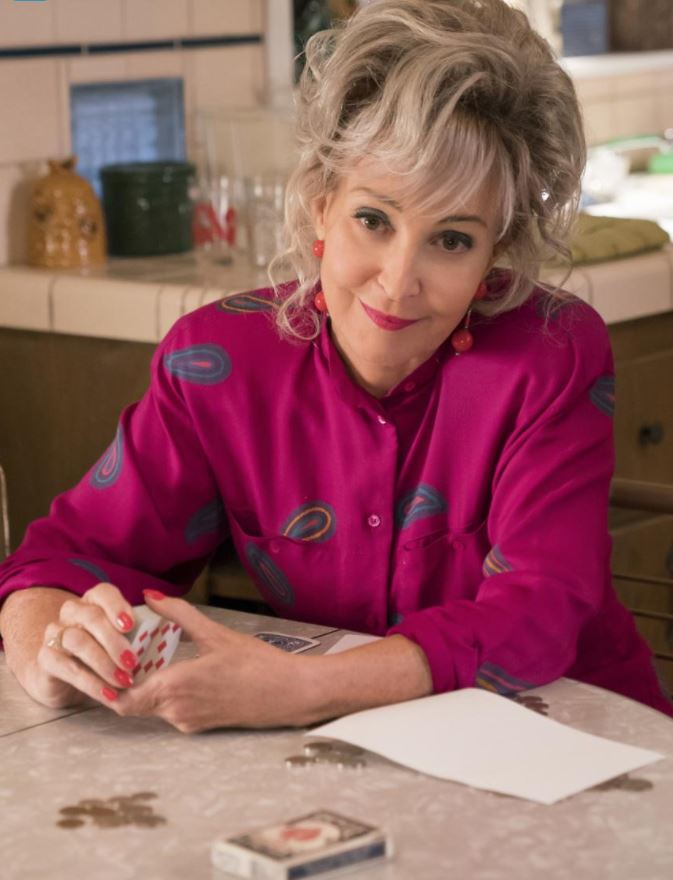

Constance "Connie" Tucker
Connie é uma mulher independente e de espírito livre, que vive em Medford, Texas, sendo a base emocional e o refúgio rebelde de seus netos.

Frases de Connie:
"Eu não sou velha, sou experiente. E a experiência diz que isso é uma péssima ideia."
"Regras foram feitas para serem quebradas, especialmente as da sua mãe."
"A vida é curta demais para não apostar um pouquinho de vez em quando."
Características da MeeMaw:
- Sabedoria de Vida e Conselhos Práticos
- Espírito Rebelde e Independente
- Afinidade com Jogos de Azar
- Lealdade Incondicional à Família
- Sarcasmo e Visão Realista do Mundo
Acesse este link para ver os melhores momentos do seriado
Para mais informações, consulte a página da série na wikipedia
Site desenvolvido pelo aluno do 2°TINF - IFTM Campus Patrocínio
Voltar